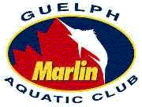

The Guelph Marlin Aquatic Club challenges all Swim Ontario Clubs to make a $100.00 donation to the Victor Davis Memorial Fund!
VICTOR DAVIS 1964 - 1989
On March 31,2000 – April 2, 2000 the Guelph Marlin Aquatic Club will be hosting the 2nd annual Aqua-Mar Victor Davis Memorial Cup swim meet at the Victor Davis Memorial Pool in Guelph. During this event the Marlin’s will be making a $1000.00 donation to the Victor Davis Memorial Fund.
As a former member of the Guelph Marlin Aquatic Club Victor Davis left an invaluable legacy to amateur sport in Canada: the legacy of his character. Character built on commitment, intensity, discipline, effort, and desire. Character that creates champions. Victor was a champion, a world record holder, and an Olympic gold medalist.
The Victor Davis Memorial Fund was established to remember Victor, his contribution to competitive swimming in Canada, and to encourage other young Canadians toward excellence. Each year awards may be made from the Fund to promising, high performance Canadian amateur swimmers to assist them to continue their training, education, and pursuit of medals at the international level of competition.
Last year the Marlin’s headed up a fund raising campaign leading up to the Aqua –Mar Victor Davis Memorial Cup. As a result of this campaign the Marlin’s were able to present a cheque to The Victor Davis Memorial Fund on behalf of all those who supported the fund for $6725.00. In the weeks following the meet more cheques were received for the Victor Davis Memorial Fund bringing the total to just under $10,000.00.
The Marlin’s goal this year is to raise over $10,000 for the Fund through community and corporate support. The Marlin’s would also like to challenge all other swim clubs to donate a minimum of $100.00 to The Victor Davis Memorial Fund. A plaque will be displayed at the Victor Davis Memorial Pool listing all that support this endeavor. There will be three levels that you may choose to support, Gold - $500.00 + donation, Silver - $250.00 donation, Bronze - $100.00 donation. All donations are fully tax deductible and will have receipts issued by Swimming/Natation Canada, the sports governing body.
If you are interested in supporting the Victor Davis Memorial Fund please contact Scott Budd at (519) 767-6066 or call the office of the Guelph Marlin Aquatic Club at (519) 823-7774. You can also reply by mail to:
351 Auden Rd
Guelph, Ont.
N1E 6T2
Please make cheques payable to The Victor Davis Memorial Fund